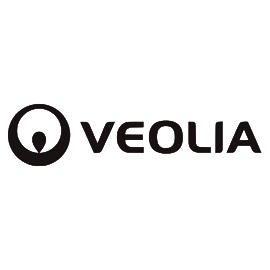
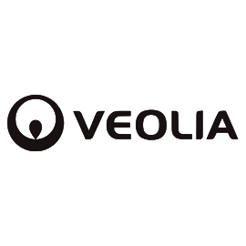

Plan de Fomento y Conservación de la Biodiversidad
Agricultura


Empleamos la tecnología para ofrecer respuestas rápidas y precisas, convirtiendo los desafíos ambientales en resultados concretos de manera oportuna.

Aplicamos metodologías basadas en evidencia, entregando la seguridad necesaria para tomar decisiones estratégicas.

Simplificamos el proceso normativo y de gestión, brindando una visión clara desde el diagnóstico hasta la ejecución.
Articulamos ciencia, tecnología y gestión para manejar integralmente tus desafíos ambientales: desde la evaluación y planificación, hasta la ejecución y cumplimiento.
Agricultura

Inmobiliario

Inmobiliario
Municipalidades

Relleno Sanitario
Conoce a los profesionales que lideran nuestra visión y ejecutan nuestros proyectos con excelencia.
Respuestas a las consultas más comunes sobre nuestro método de trabajo, alcance y colaboración.


 


Cuéntanos tu necesidad y te contactaremos de manera directa para ofrecerte la asesoría de un especialista en el área.
¡NO TE LA PIERDAS! NUESTRA ÚLTIMA PUBLICACIÓN